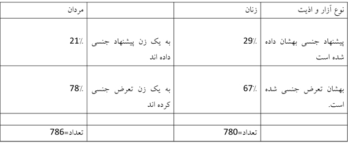
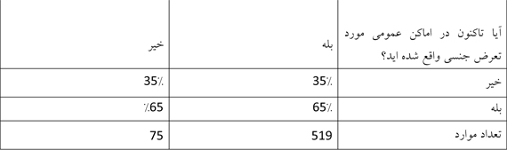
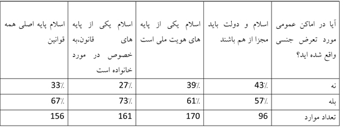
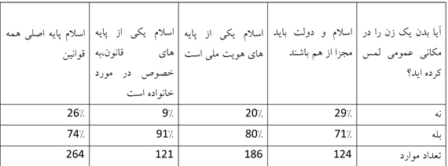

پذيرش > تریبون > مقالات > وقتي که زنان از حرکت کردن هراس دارند: خشونت جنسي و انقلاب مصر/راجر فريدلند و ژانت (...)


 وقتي که زنان از حرکت کردن هراس دارند: خشونت جنسي و انقلاب مصر/راجر فريدلند و ژانت آفاري وقتي که زنان از حرکت کردن هراس دارند: خشونت جنسي و انقلاب مصر/راجر فريدلند و ژانت آفاري
4 اسفند 1391 - - نسخه قابل چاپ
ترجمه روژين محمدی


تغییر برای برابری - سياست بدن در مصر در خطر است. بيست و پنج ژانويه امسال در مراسم دومين سالگرد انقلاب مصر يکي از زنان حاضر در تظاهرات توسط دسته اي از مردان محاصره شد و مورد اذيت و آزار جنسي قرار گرفت. اين زن در بين اين مردان دست به دست مي شد تا به سختي توسط گروهي از فعالين مرد مخالف با آزار و اذيت جنسي زنان نجات يافت. جمعيتي که مانند شکارچياني گرد طعمه اين زن را احاطه کرده بودند در اين ويدئو مشخص است.
آن زن تنها قرباني آزار و اذيت در آن شب نبود، 18 مورد مشابه ديگر نيز گزارش شدند. و البته اين اولين باري نبوده که تظاهرکنندگان و خبرنگاران زن در چنين تظاهراتي توسط گروهي از مردان مورد حمله قرار گرفته، لباسهايشان پارهشده و اندام هاي جنسيشان توسط مهاجمين لمس شده است.
دو سال پيش زماني که حکومت حسني مبارک توسط توده هاي مردم سرنگون شد، زنان که نقش مهمي را در تظاهراتي که منجر به سقوط ديکتاتور شد ايفا مي کردند، از امنيتي که در اماکن عمومي تجربه مي کردند شگفت زده شده بودند. در فوريه 2011، ثمر عثمان يک فعال زن جوان در گزارشش به راديو آزادي وضعيت را اينگونه توصيف کرد: "روزهاي تظاهرات مانند آرمانشهر هستند، به خاطر اينکه حتي يک مرد نيز به من نگاه جنسيتي نکرد. در حقيقت آنان خيلي از ما هم محافظت ميکردند."
* کسانيکه زنان را در خيابان لخت و به آنان تجاوز مي کنند، اين پيغام مشخص را به همه زنان ميرسانند: سياست را رها کنيد و به ما بسپاريد.
بلافاصله پس از سقوط مبارک، آزار و اذيت جنسي با شدتي مضاعف بازگشت. پيام اين موج جديد خشونت مشخص بود: زنان در انقلاب مقابل مبارک مورد نياز بودند اما اکنون که مصريها جامعهي جديدي ميسازند زنان بايد فضاي سياست را به نفع مردان خالي کنند. فعالين حقوق زنان در دادخواستي که اخيراً خطاب به مرسي، رييس جمهور مصر، امضا کردهاند "موج جديد هدف قرار دادن فعالين زن و مجازات کردنشان به دليل حضور در اماکن عمومي و حذف کردنشان از عرصه حيات سياسي کشور" را محکوم کردند.(فوريه 2013 ... )
در پاسخ به اين موج جديد گروهي از زنان و مردان شجاع مصري اقدامي با عنوان "عمليات ضد آزار و اذيت جنسي" را ترتيب داده اند. آنها مسلح اند، گاهي با باتوم ها و مشعل هاي روشن. مردان عضو اين عمليات در صفوف اول قرار ميگيرند تا زنان را از حمله و تجاوز مصون بدارند. اين سازمان جديداً اعلاميه اي با اين مضمون در صفحه توييترش منتشر کرده است: "مبارزه ما عليه تجاوزات جنسي اوباش در قلب حرکت انقلابيمان واقع شده است، عليه رژيم و باورهايي که ما را مي کشند. ما متوقف نخواهيم شد!"
شايعاتي وجود دارد مبني بر اينکه اراذل و اوباش مورد حمايت مالي و تجهيزاتي قرار گرفته اند. اعمال خشني که آنان مرتکب مي شوند چنين توصيف شده است: افراطگرايانه، تاکتيکهايي جنگي که آشكارا سازماندهي شده اند و در آنها زنان را گاهي اوقات لخت مي کنند و معمولاً مورد تجاوز دسته جمعي با انگشتهايشان قرار مي دهند، درحاليکه پليس بيتفاوت نظارهگر اين اعمال است. در سال 2005 رژيم مبارک نيز از تاکتيکهاي مشابهي براي ارعاب مردم و شکستن مقاومت مردمي استفاده ميکرد.
باور ها و رفتار هاي اين افراد ــ بنا به گفتهها ــ فقط تاکتيکهاي حيواني ضدانقلابيون نيستند. تاکتيک هاي سياسي، از بافت عميق نظم اجتماعي استخراج ميشوند. چنين تاکتيک هايي در مصر در واکنش به جامعهاي که در آن امنيت جنسي زنان همه روزه به خطر مي افتد، به عنوان شکست هزاران مرداني تلقي مي شود که بايد براي کمک به قربانياني که درست در مقابل چشمانشان مورد تعرض قرار مي گيرند، کاري انجام دهند. اين تاکتيک ها در واکنش به جهاني اتخاذ مي شوند که در آن زنان با ورود به عرصه عمومي ــ بهويژه بدون همراهي همسر يا برادرانشان ــ تبديل به اهدافي جنسي مي شوند.
در نيمه اول سال 2012 تحت حمايت مرکز تحقيقات ميداني دانشگاه کاليفرنيا در سانتا باربارا به مديريت پائلو گاردينالي، ما آنچه را که نسل فيس بوکي مصريها خوانده مي شود مورد بررسي قرار داديم. در اين بررسي بنرهاي تبليغاتي مخاطبان را به وبسايتي ارجاع مي دادند که در آن از پاسخ دهندگان از تمايلات جنسيتي و عاطفيشان سوال ميشد و افراد بدون ذکر هويت پاسخ مي دادند. هزاران جوان مصري با تحصيلات عالي که اکثريت آنان بين 18 تا 25 سال سن داشتند به سوال ها جواب دادند.
ما متوجه شديم که درصد بالايي از زنان، تقريبا يک چهارم آنان، پيشنهاد هاي جنسي اي را در مکان هاي عمومي مانند اتوبوس يا پارک دريافت کرده بودند. تقريبا به همان ميزان مردان پاسخدهنده نيز پذيرفتند که به زنان چنين پيشنهادات جنسي اي را داده اند. داشتن مکالمهي جنسي براي مرد يک موضوع است اما داشتن تجربه ي فيزيکي با يک زن در عرصهي عمومي موضوع ديگريست.
نکتهي تکاندهنده تعداد زناني است که مورد تعرض جنسي (خواه لمس ساده بدن خواه لمس اندام هاي جنسي) توسط مردان در مکان هاي عمومي قرار گرفته اند. دو سوم زنان گفته اند که اين اتفاق برايشان افتاده است. (مرکز دفاع از حقوق زنان مصر نيز درصد مشابهي را در تحقيقي که در سال 2008 انجام داده بود، به دست آورده است). و حتي درصد بيشتري از مردان پذيرفته اند که چنين عملي را مرتکب شده اند.

براي درک بهتر اين موضوع که اين آمار چقدر بالاست، ما از بيش از هزار دانشجو در دانشگاهمان در کاليفرنيا سوال پرسيديم که آيا در دوازده ماه گذشته بدنشان بدون خواست خودشان با نيت جنسي لمس شده است؟ اين سوال شامل اندام هاي جنسي و ساير اندام هاي بدن است. محيط دانشگاه هاي آمريکايي به خاطر ميزان بالاي برخورد هاي جنسي بي ملاحظه و غالبا در حالت مستي بدنام هستند. در اين محيط ها پرخاشگري هاي جنسي زيادي توسط مردان اتفاق ميافتد. قاعدتاً بايد انتظار داشت که نسبت گزارش آزارهاي جنسي به همان ميزان يا حتي بالاتر باشد اما واقعيت اين نبود. تنها سي درصد زنان اظهار داشتند که مورد آزارهاي جنسي قرار گرفته اند.
روابط ميان زن و مرد هسته سياست هاي اسلامي را تشکيل ميدهد. همين مسئله در مورد سياست هاي مذهبي محافظهکارانه در همه جا صدق مي کند، چه مسيحي باشيد چه يهودي چه هندو. درخواست براي عفت عمومي زنان توسط اخوان المسلمين شامل رهنمودها و قوانيني مبني بر شكلهاي مختلف براي جداسازي جنسيتي مي شود. زنان مصري که مورد چنين تعرضاتي قرار مي گيرند، غالباً براي عدم رعايت حجاب مقصر دانسته مي شوند. زنان اسلامگرا که بسياري از آنان از خانواده هاي به شدت محافظه کار ميآيند، مدعي اند که داشتن حجاب ــ پوششي که امروزه در کشورهاي مسلمان دنيا نماد پاکدامني محسوب مي شود ــ به آنها اجازه ميدهد که در اماکن عمومي حاضر شوند، به دانشگاه يا سر کار بروند بدون اينکه کسي عفت آنها را مورد سوال قرار دهد و کمتر مورد آزار و اذيت جنسي يا کلامي قرار بگيرند. حجاب آنان نه تنها نشانه ي پاکدامنيشان به عنوان يک وظيفه الهي است بلکه به کساني که قصد تعرض به آنان را دارند اين پيغام را ميرسانند که مورد غضب برادران مسلمانشان واقع خواهند شد.
سوال اين است: آيا داشتن حجاب زنان را از آزار و اذيت جنسي مصون ميدارد؟ زناني که فکر مي کنند تمام زنان بايد موهايشان را بپوشانند و طبيعتا خودشان نيز حجاب دارند نيز به همان ميزان زناني که چنين اعتقادي نداشتند مورد تعرض در اماکن عمومي قرار گرفتند.
آيا حجاب از زنان در برابر تعرض محافظت مي کند؟ مصر،2012
آيا معتقديد که زنان بايد حجاب داشته باشند؟

پوشيدن روسري زنان را محافظت نمي کند. ممکن است کسي فکر کند زني که حجابش را رعايت مي کند از حمايت افراد مومن در گردهماييهاي اجتماعي در همسايگي منزلش و شبکه هاي مذهبي مساجد برخوردار است يعني کساني که آن زن مي تواند روي کمکشان در صورت تعرض حساب کند. چنين هتاکيهايي به زنان فقط جرم نيست بلکه مبارزه با ايمان مردم محسوب ميشود. ممکن است کسي فکر کند که زنان اسلامگرا کمتر مورد آزار و اذيت قرار ميگيرند، آيا اين واقعيت دارد؟
در نظرسنجيمان همچنين از پاسخ دهندگان در مورد رابطهي اسلام و دولت سوال کرديم. نظرات متنوعي در پاسخهايشان منعکس شد. کساني که فکر مي کردند بايد جدايي کامل بين دين و دولت وجود داشته باشد، کسانيکه فکر ميکردند اسلام جزئي اساسي از هويت ملي شان است، کسانيکه فکر ميکردند قوانين اسلامي بايد يکي از پايه هاي قانون گذاري در کشورشان باشد و حتي کسانيکه معتقد بودند قوانين اسلامي بايد پايهي تمامي قوانين کشورشان باشد.
پاسخ دهندگان به پرسش هاي ما سکولار نيستند. آنها اکثرا مذهبي هستند و با جديت تمام فرايض دينيشان را انجام ميدهند. اکثريت آنها فکر ميکنند اسلام بايد پايهي قوانينشان باشد. اگر به نسبت زناني که مورد تعرض جنسي قرار گرفته اند دقت و نظرات سياسي آنان بررسي شود، نتايجي بر خلاف انتظار به دست مي آيد. زنان اسلام گرا بيشتر مورد تعرض واقع شده اند. در واقع دو سوم زناني که اعتقاد راسخ در به کار بردن قوانين اسلامي دارند، مورد لمس شدن يا آزار و اذيت جنسي قرار گرفته اند.
آزار جنسي و اسلام سياسي: زنان مصري ،2012
ديدگاه سياسي تان را چگونه بيان مي کنيد؟

پس چه کسي اين زنان را مورد اذيت و آزار جنسي قرار مي دهد؟ زماني که ما مرداني را که به زنان در عرصه ي عمومي تعرض کرده بودند بر اثر انديشه ي سياسي شان طبقه بندي کرديم، به اين نتيجه رسيديم که اسلامگرايان کمتر از غير مذهبيان درگير اين وقايع نبودند. سه چهارم پاسخگويان مردي که معتقدند اسلام بايد تنها پايه ي قوانين کشورشان باشد، پذيرفته اند که به زنان در عرصه عمومي تعرض کرده اند. رعايت کردن حجاب اولين بار در محيط هاي دانشگاهي مصر اتفاق افتاد و بعد از آن به بقيه جامعه سرايت کرد. بسياري از زنان اسلامگرا، زناني که همواره مورد تعرض جنسي قرار مي گيرند، تحصيلات دانشگاهي نيز دارند. آنها بدون همراهي مردان بيرون ميروند، به دانشگاه و محل کار (وامروزه به تظاهرات خياباني) مي روند. اين رفتارشان آن ها را در معرض خطر تعرض توسط مرداني قرار ميدهد که از نظر سياسي همفکرشان هستند. براي اين مردان، زنان تنها اهدافي مشروع و جذاب براي تعرض هستند.
لمس شدن بدن زنان در اماکن عمومي و اسلام سياسي،مردان مصري،2012

تعرض جنسي به زنان مصري تنها براي زناني که پوششي به نشانهي عفت اجتماعي ندارند، رخ نميدهد. اين پديده مختص زنان بي حجاب يا زناني نيست که به جدايي دين از دولت اعتقاد دارند. بلکه براي همهي زنان اتفاق ميافتد، چه آناني که فکر مي کنند محمد مرسي انقلاب را ربوده است و چه آناني که حامي اخوان المسلمين هستند و فکر ميکنند دارودستهي سکولارها و سوسياليست ها در خيابانهاي شهر ميخواهند انقلاب را بربايند.
آنچه در اماکن عمومي مصر ديده مي شود چيزي فراتر از آزار و اذيت جنسي زنان توسط مرداني صرفا با انگيزه هاي شخصي است. آزار و اذيت جنسي تبديل به اسلحه اي براي مبارزه با زنان در جامعه شده است. طبق گزارش ها اين حملات با هماهنگي انجام مي شوند. مردان، گروهي مرکتب اين اعمال مي شوند و پليس حاضر در محل بي تفاوت از کنار اين حوادث مي گذرد.
دفاع از حقوق زنان نقطه اشتراک همه جريان هاي سياسي است و بايد باشد: نه تنها اپوزيسيون حاضر در ميدان تحرير، بلکه رژيم محمد مرسي و اخوان المسلمين. اخوان المسلمين حمايت گستردهاي را در بين مردم مصر کسب کرد. بخشي از اين حمايت به خاطر حمايتش از حرمت و ارزش زنان بود. اين سازمان خواستار انجمن هاي اجتماعي، موسسات آموزشي و حتي اتوبوسهاي مجزا براي زنان است. اين سازمان به زنان اجازه حجاب و پوشش اختياري را داد. اخوانالمسلمين اين کارها را براي دفاع از حرمت زنان مسلمان مصري انجام داد. اکنون که آنها قدرت را در دست دارند، خبري از مردانش نيست که در خيابان ها از حرمت زنان پاسداري کنند. وضعيت امروز اخوان المسلمين در مصر ياد آور رژيم آيت الله خميني در ايران است. رژيمي که با حمايت ميليون ها زن ايراني در سال 1979 قدرت را در ايران به دست گرفت ولي در زماني کوتاه به کمک افراطيون تمام تلاشش براي بيرون راندن زنان از عرصه اجتماع را کرد. در ايران حکومت به زور و ضرب حجاب را اجباري کرد. در مصر اکثريت زنان خودشان حجاب دارند. کسانيکه زنان را در خيابان لخت و به آنان تجاوز مي کنند، اين پيغام مشخص را به همه زنان ميرسانند: سياست را رها کنيد و به ما بسپاريد.
حقوق زنان تنها مربوط به سکولاريسم يا اسلامگرايي نمي شود بلکه به انسان بودن مربوط است. پاسداري تمامعيار از حقوق زنان وظيفهي هميشگي همه مردم است. در هر جا و از هر جنسي که باشند.
منبع:
http://www.huffingtonpost.com/roger-friedland/sexual-violence-and-the-egyptian-revolution_b_2658500.html
ارسال به
بالاترین
،
توییتر
،
فریندفید
،
فیسبوک
در همين بخش :
 دهمین دورۀ مراسم تندیس صدیقه دولت آبادی ۱۳۹۲ دهمین دورۀ مراسم تندیس صدیقه دولت آبادی ۱۳۹۲
کارت پستالهایی به بهانهی هشت مارس و به یاد همهی مبارزین راه برابری
بیانیه بیش از 350 تن از مدافعان حقوق زنان به مناسبت روز جهانی زن؛ زنان هر روز فرودستتر میشوند
لباسی که برای تن ما دوخته اند! /اعظم بهرامی
چالشها و چشمانداز فعالیت مدنی زنان
ديگر بخش ها :
طرح یک میلیون امضا
|
مقالات
|
سایت نوشته ها
|
اخبار
|
گزارش كمپين
|
گفت و گو
|
علیه سکوت
|
كوچه به كوچه
|
نامه های شما
|
گزارش ویژه
|
گفتگو با اعضا
|
ویژه سالگرد کمپین
|
تصویر برابری
|
دل آرام علی
|
تریبون
|
مقالات
|
تاریخ شفاهی
|
خارج از چارچوب
|
کتابخانه
|
درباره کمپین
|
کمپین در شهرها
|
کمپین در بند
|
صدای تغییر
|
ویژه 22 خرداد
|
لایحه حمایت از خانواده
|
گالری
|
عشا مومنی
|
امیر یعقوبعلی
|
خدیجه مقدم
|
راحله عسگری زاده و نسیم خسروی
|
پروین اردلان،جلوه جواهری، مریم حسین خواه، ناهید کشاورز
|
زینب پیغمبرزاده
|
سعیده امین، سارا ایمانیان، محبوبه حسین زاده، ناهید کشاورز و همایون نامی
|
احترام شادفر
|
نسیم سرابندی زاده،فاطمه دهدشتی
|
وبلاگ مهمان
|
پرونده خرم آباد
|
دستگیری ها
|
مریم مالک
|
پرستو اللهیاری
|
مهرنوش اعتمادی
|
سمیه رشیدی
|
Other Languages
|
همراهان
|
«فراخوان کمپین ده روز با بهاره هدایت»
| English
|